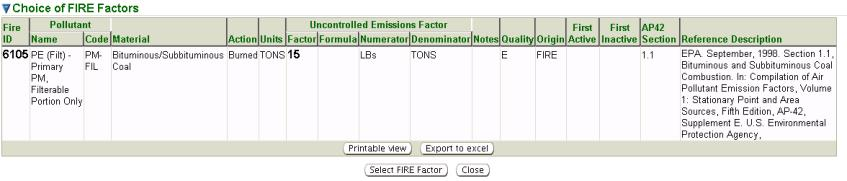
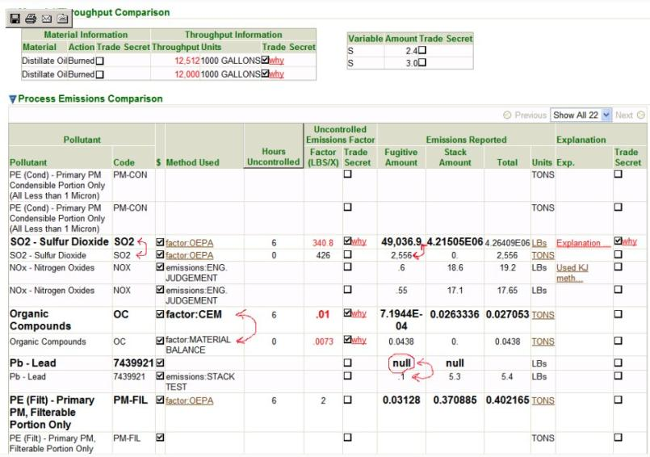

Previous Topic
Next Topic
| Emissions Inventories |
Previous Topic |
Next Topic |
This Help page discusses the information fields you see on the Emissions Inventory page of the system and provides assistance on how to use the electronic system to review, and when applicable edit, emissions inventories.
The Emissions Inventory page is the electronic depiction of all of the emissions inventory information submitted by a facility, whether in the Title V, Synthetic Minor Title V, or Non-Title V emissions reporting category, except basic facility information which is contained in the Facility Profile.
Emissions inventories submitted through the system may be comprised of three parts; FER (Facility Emissions Inventory), ES (Emissions Statement) and EIS (Emissions Inventory Summary). For Title V facilities, a FER and EIS will be submitted every year. For Synthetic Minor Title V facilities a FER will be submitted every year and an EIS may be submitted, if desired. For Non-Title V facilities, a FER will be submitted every two years. For ALL three types of facilities, an ES is submitted with the FER and EIS, when applicable, if the facility resides in a non-attainment county and the facility emits greater than 25 tons per year of NOx AND/OR VOC.
The list of pollutants contained in the emissions inventories is compiled from a list that appears in the National Emissions Inventory (NEI) pollutant reference table, Ohio EPA’s old permitting and reporting application (STARS) and Section 114 Right to Know program.
The emissions factor list originates from Web FIRE. Only uncontrolled and un-revoked Web FIRE records are considered in the original compilation of emissions factors. The factors are processed to achieve consistency with reporting units, measures and material codes within each Source Classification Code (SCC). Since there are significant emissions factors gaps in Web FIRE, Ohio EPA intends to identify and fill a significant number of those gaps in the future using all available resources. The system’s emissions factors table is a dynamic list and it will be updated once a year with the most up to date factors.
This Help page will not provide guidance or assistance with the emissions inventory review process in general, for example determining if the facility chose the method that is best to determine emissions unit actual emissions.
Title V and Synthetic Minor Title V emissions inventories are required to be submitted through this electronic system by the facility; whereas non-Title V emissions inventories may be submitted as an option. If a non-Title V emissions inventory is submitted as a “hard copy” rather than through IMPACT, Ohio EPA Central Office staff will enter it electronically upon receipt. This is applicable to new emissions inventories or any needed revised emissions inventories.
The only emissions inventories that can be viewed by Ohio EPA are those that have been submitted through IMPACT, or those that were submitted in hard copy form and are entered electronically by Ohio EPA staff. If a facility is entering and saving emissions inventory information in IMPACT, it will not be viewable by Ohio EPA until it has been submitted.
The contents of these emissions inventory pages will differ depending on the type of emissions inventory you are working with.
The first step for all facilities submitting emissions inventories EXCEPT Non-Title V emissions inventories, is to ensure the information in their Facility Profile is correct. All emissions inventories are linked directly to the current Facility Profile that exists in the database. The Facility Profile will include, but is not limited to, created emissions units, control equipment, processes, and release points. Please note in order to have submitted an emissions inventory, each emissions unit in the Facility Profile must have an emissions process with an SCC associated with the emissions unit (except Non-Title V emissions inventories). Also, other information from the emissions unit, control equipment and release point pages are used in the emissions inventory. Only those valid emissions unit(s) contained in the Facility Detail for your specific reporting year would have been included in the emissions inventories. In some cases it may have been necessary to use a historic Facility Profile, for example when submitting a revised emissions inventory for a historical year. In those cases, the emissions unit(s) that existed at that time would have needed to be included in the emissions inventory. Note, Non-Title V emissions inventories are not associated with a Facility Profile.
Engineering Guide 71 provides information to help the facility determine if an emissions unit is exempt from emissions reporting. When the facility identifies that an emissions unit is Exempt because Engineering Guide #71, under the emissions unit specific summary page, it will disable all required emissions reporting for this emissions inventory. Any emissions unit in the Facility Detail associated with the emissions inventory that is identified as De Minimis will automatically be exempt from emissions reporting and; therefore the Exempt because Engineering Guide #71 checkbox will already be checked.
You can locate an emissions inventory and access an Emissions Inventory Detail page throughout many of the system pages, most usually through the Emissions Inventory Search or Facility Detail pages.
Using either method, the datagrid will contain a column with the Inventory Id which is hyperlinked to the specific Emissions Inventory Detail page. Click on the Inventory Id.
Also note the datagrid will contain a column with the FP Id. This is the Facility Profile identification number for the specific version of the Facility Profile associated with the emissions inventory when submitted. If the FP Id is not identified as “current” then the emissions inventory is associated with a historical profile. You can click on the FP Id hyperlink to view the Facility Profile associated with the emissions inventory. If you see the message; ** Note this Inventory is associated with a Historical Facility Detail version. ** , you will know you are not viewing the current Facility Detail.
At the top of each of the emissions inventory pages discussed below you will see a header with general information about the facility and the specific emissions inventory you are viewing. This information includes the Reporting Category, Reporting Year and Emissions Inventory Number. You will also find information regarding submittal and processing by Ohio EPA: Submit Date, Approved Date and Reporting State.

The Emissions Inventory Tree contains a list of emissions
unit(s), or
groupings of, associated with the facility and emissions process(es)
associated with the emissions unit(s). Only those emissions units
contained in the Facility
Profile associated with the emissions inventory
that were identified as operating for any portion of the reporting
period were included in the Emissions Inventory Tree. The emissions
unit(s) are denoted by the symbol  (EU Id icon) while the process(es)
are denoted by the symbol
(EU Id icon) while the process(es)
are denoted by the symbol  (process icon).
(process icon).
When completing an emissions
inventory, the facility had the ability to group certain emission
unit/process combinations. When this is done the grouped emissions
units:processes will be represented by the symbol  (group icon) and the
specific process will no longer be identified under the emissions unit.
If they have more than one process with the same SCC code that shares
the same downstream control equipment and release point they can create
a grouping of the processes which allows them to enter emissions
information one time for the entire group. Within IMPACT, the
processes that can be grouped are limited to those that have the same
SCC code and have exactly the same downstream equipment (control
equipment and release points). Please keep in mind, this does not imply
the equipment is of the same type but rather is the exact same piece of
physical equipment (e.g., two emissions units share
one control device
and release point). Furthermore, it will have be necessary for the
facility to determine which of the potential grouped process
combinations are qualified for the grouping in accordance with
Engineering Guide 72.
(group icon) and the
specific process will no longer be identified under the emissions unit.
If they have more than one process with the same SCC code that shares
the same downstream control equipment and release point they can create
a grouping of the processes which allows them to enter emissions
information one time for the entire group. Within IMPACT, the
processes that can be grouped are limited to those that have the same
SCC code and have exactly the same downstream equipment (control
equipment and release points). Please keep in mind, this does not imply
the equipment is of the same type but rather is the exact same piece of
physical equipment (e.g., two emissions units share
one control device
and release point). Furthermore, it will have be necessary for the
facility to determine which of the potential grouped process
combinations are qualified for the grouping in accordance with
Engineering Guide 72.
Clicking on an EU Id icon will generate the specific Emissions
Unit
XXXX Summary page, clicking on a group icon will generate
the specific
Emissions
Unit Group XXXX Summary page, while clicking on the
process
icon will generate the specific Process &
Emissions Detail
page. On these pages you can view specific information about the
emissions unit and process and their emissions reporting information.
At any point you can click on the Inventory Id  at the top of the Emissions
Inventory Tree to return to the Emissions Inventory page.
at the top of the Emissions
Inventory Tree to return to the Emissions Inventory page.
Note, next to the Inventory Id and EU id (or Group Id) will be the amount, specified in Ton, of emissions that have been reported.
The first page of the emissions inventory, when at the top level
of the
Emissions Inventory Tree,  , is the Emissions
Inventory Summary section which
contains:
, is the Emissions
Inventory Summary section which
contains:
Synthetic Minor Title V facilities may choose to select the EIS box if they choose to report this information (it is not required). If they check the EIS box, it may add additional pollutants to their list for reporting.
IMPACT also automatically identifies ES as applicable if their facility is located in a non-attainment county. It is up to the facility to determine if they emit greater than 25 tons per year of NOx AND/OR VOC. If they determine this is not the case, they can uncheck the ES box.
If necessary, you also have the ability
to attach a document by clicking  .
When this button is clicked the
following pop-up window will appear with the ability to add both public
and trade secret documents:
.
When this button is clicked the
following pop-up window will appear with the ability to add both public
and trade secret documents:

Enter a Description,
choosing the name of the document carefully
because this will be the document’s identifier in the system. Select
the Document
type from the picklist and upload the appropriate file. A
Trade Secret File must have a “public” and
“secret” file submission.
Upload both versions and use the Trade Secret
Justification box to
enter the justification for trade secret document submittal. There must
be a justification entered to save the document. Click  to add the
Attachment
or click
at any point to abort the process of attaching a
document. You will return to the Emissions Inventory
detail page where you
can view the document(s) in a datagrid by clicking on the Attachment
Type hyperlink. The Attachment ID
of the document will be a hyperlink
that generates the Attachment
pop-up where you can make changes to the
Description
or Attachment
Type of the Attachment
or where you can
delete the Attachment
Type by clicking
to add the
Attachment
or click
at any point to abort the process of attaching a
document. You will return to the Emissions Inventory
detail page where you
can view the document(s) in a datagrid by clicking on the Attachment
Type hyperlink. The Attachment ID
of the document will be a hyperlink
that generates the Attachment
pop-up where you can make changes to the
Description
or Attachment
Type of the Attachment
or where you can
delete the Attachment
Type by clicking  .
If document uploaded needs
replaced or the Trade
Secret Justification needs edited you must delete
the Attachment
and upload it again.
.
If document uploaded needs
replaced or the Trade
Secret Justification needs edited you must delete
the Attachment
and upload it again.
For each emissions unit, or grouping, click on the EU id icon or group icon to view summary information. On this page you will see the Emissions Unit XXXX Summary (where XXXX denoted the specific emissions unit Id) or the Emissions Unit Group XXXX Summary (where XXXX denotes the name of the group), section which contains:
For each process, click on the process icon to view the specific emissions reporting information. On this page you will see the Process & Emissions Detail section, for the specific process you are viewing, which contains three major sections. The first section is summary information about the process. The second section is information regarding the material, operating schedule and throughput. The third section is where you will view the emissions information for each pollutant and Air Service will have calculated the emissions that will comprise the final emissions inventory.
This section will identify the process name (identifier), and SCC code; for example F001-1: Source Classification Code (SCC) is 3-04-003-99. In this example: F001-1 is the Process Name and 3-04-003-99 is the SCC assigned to this process.
The emissions factor calculations performed by the system are dependent upon the Throughput entered. The facility had the option to declare the Material Information and/or Throughput Information a trade secret. You will be able to click on the why hyperlink (in red) to view the justification; however you must be granted access to view the trade secret information.
This section contains a datagrid of pollutants where the facility entered emissions information and IMPACT calculated their emissions. All emissions fee and criteria pollutants will ALWAYS appear in the datagrid regardless of applicability to their process. Beginning with reporting year 2008, Hazardous Air Pollutants (HAPs) will appear in the pollutants section for the first time. Only those HAPs that are identified as related to their process (based on Ohio EPA’s generic list of emissions factor(s)) are populated in the datagrid. For their convenience, the system picks the generic emissions factors for HAPs when it populates the datagrid. They were asked to review the emissions estimate for HAPs and if necessary change the default emissions factor, or they could have added additional pollutants to the list.
For each pollutant they were required to enter a value. If the pollutant has zero emissions to be reported, they were instructed to enter “0” rather than leaving the value blank/empty. If ALL pollutants for a specific process were to be reported as “0”, rather than entering “0” for each pollutant they have the option to enter “0” in either the Throughput column of the material and throughput information datagrid, OR, they could enter “0” in the Hours Per Year box in the operating schedule information section (they did not need to do both). Then, it would NOT have been necessary to enter ANY other information on the Process & Emissions Detail page for that process.
Calculations are performed by the system based on a variety of information contained in the system’s databases including the emissions factor and the emissions unit information identified in the Facility Profile (e.g., control equipment efficiency). If the resultant emissions based on the calculations performed in they system are not accurate or do not represent the facility’s actual emissions, they were instructed to revise the information contained in their Facility Profile and/or use different factors than the default values. If they selected an “emissions” method, they were instructed to attach a spreadsheet showing what was used to calculate the emissions.
Note, in the $ column a checkbox indicates that pollutant is subject to the FER component of this inventory.
The Method Used column identifies the type of method the facility used for calculating emissions for EACH pollutant. Methods are categorized as either “emissions” or “factor” methods. Selecting an “emissions” method required entry of the actual fugitive and stack emissions based on their own calculations, which are added to determine the Total. Selecting a “factor” method required entry of the uncontrolled hours of operation and sometimes an uncontrolled emissions factor value and the system automatically calculates the fugitive and stack emissions values based on these values and the data contained in the Facility Detail. For any ”factor” method, the amount of uncontrolled emissions are calculated from Throughput amount multiplied by the factor. Note that the unit of the factor is pounds per unit of throughput (X units). The control equipment and release points described in the Facility Detail associated with this process are examined to determine the ultimate emissions.
For both “emissions” or “factor” methods the following options are available:
For “factor” methods you the following additional options are available:
When choosing a “factor” method, Hours Uncontrolled and Uncontrolled Emissions Factor columns are entered. The system automatically calculates the Emissions Reported columns based on these entries.
Clicking on the hyperlinked units in the Units column will generate a pop-up, as depicted in the top of the picture below, which provides additional information regarding the emissions calculation. Note that the calculations pop-up shows how 1000 units of uncontrolled emissions are controlled. Using a multiplier of 1000 allows for better readability of the values (removing the need to display very small numbers).
Useful information about the calculations:
If no capture efficiency for the pollutant is specified for the control equipment, the system still uses the lowest capture efficiency of other pollutants for this pollutant. For example, SO2 in the example below:
When this method is selected, only the Hours Uncontrolled column is entered by the facility.
The system calculated value will be in the Factor (LBS/X)column. Clicking on the hyperlinked factor:OEPA in the Method Used column will generate a Choice of FIRE factors pop-up, as depicted below, which provides information regarding the emissions factor and how the calculation was performed. Please note that we use the term FIRE factors and Internal Emissions Factors database interchangeably. Either one of those two terms mean the same database since the Internal Emissions Factors is compiled from FIRE, identified and appended missing FIRE emissions factors and converted FIRE factors into a streamlined set of factors with consistent units for each SCC.

In some cases the system may not have initially calculated a value for this method. This information is being supplied in this Help page to help Ohio EPA staff further understand the choices made by the facility during entry of their emissions inventories. The facility may have also encountered the following during the process:
The following variables will require additional information as described above:
HCl = Heat content for liquids (mmbtu/gallon)
HCg = Heat content for gases (mmbtu/scf)
HCs = Heat content for solids (mmbtu/lb)
A = Ash content
S = Sulfur Content
Ca/S = Calcium Content / Sulfur Content ratio
CL = Chlorine content
C = Carbon content
When an “emissions” method was selected, the Emissions Reported Fugitive Amount and Stack Amount columns were entered by the facility. The Units column will default to TONS but they were given the option to change it to Lbs. The system automatically calculates the Emissions Reported Total column.
If they select an “emissions” method, they were instructed to attach a spreadsheet showing what was used to calculate the emissions. This attachment may be under the Attachments section as discussed above or could also be in the "Explanation" section discussed below.
This column may contain any explanation/justification the facility added for their calculations. If this is the case you will see a checkmark in the Explanation column for that pollutant. You can view the explanation/justification by clicking the why hyperlink. If the facility selected an “emissions” method, they needed to attach a spreadsheet showing what was used to calculate the emissions.
If the facility determined that variables, explanations OR emissions factor information reported (for any pollutant in the datagrid for which the “factor” method was used), is a trade secret, you will be able to click on the why hyperlink (in red) to view the justification; however you must be granted access to view the trade secret information.
Starting with the 2008 reporting year, the EIS portion of the inventory will include all the FER/criteria pollutants in the process level and only those HAPs which the FIRE database describes as belonging to the process (same SCC and material). The facility is required to pick the best method to calculate the emissions for the FER/criteria pollutants. Stack tested emission factors are considered the most reliable emission factors and they were expected to report them. The default emissions factors should be their last selection. However, for HAP pollutants, the inventory will automatically pick the default factors from the FIRE database to calculate emissions. The facility was guided to review the estimate for each HAP pollutant and make any necessary revisions. As a convenience, the Hours Uncontrolled defaults to “0”. No additional action was required unless there is more than one FIRE row for that pollutant or a variable that requires a value, as discussed above. If the process does not actually generate that emission or generates a different amount, the facility was guided to change the method used and the appropriate information related to that process.
DO/LAA review of an emissions inventory is applicable to the FER and any ES information. The buttons and discussion below will only complete the review process for FER and ES reporting. EIS approval is handled separately and discussed under the next heading.
The following buttons are available for the review process:
If or is selected, this does not alter the workflow or notify the facility. The DO/LAA staff will need to follow up with the facility.
The first time an inventory enters an approved state, an invoice object may be created. However, this cannot occur until the DO/LAA staff person completes the appropriate workflow.
If  is
selected, you will not be able to approve the inventory
later.
is
selected, you will not be able to approve the inventory
later.
If you are reviewing a revised emissions inventory and the previously submitted inventory for which the revision was submitted has not been reviewed yet, it may be necessary for you to review the previously submitted inventory before you can proceed with the revised emissions inventory. This will be indicated in the Information bar at the top of the Emissions Inventory Detail page when you try to approve the revised emissions inventory.
As a tool for the review process you also have the ability to compare inventories for the same facility. Click , generating up a pop-up, seen below, to select the comparison report. You can enter a percentage value (defaulting to 20%) you wish the comparison to be made against in the text box. Then select the Inventory ID hyperlink for the specific inventory you wish to compare to the inventory your viewing.
If values in the current inventory differ more than a specified percent from the comparison inventory; then the value in the current inventory is flagged.
Differences in compared values for fugitive emissions, stack emissions or total emissions also flags the pollutant name. Factor values and method used are also compared. Note that if the original inventory is missing a value while the comparison inventory is not, the word “null” is used in order to have a value to highlight.
The example below identifies a comparison for a single process in an emissions inventory.

Any red text indicates trade secret information and would only be viewable if you have been granted right to view the trade secret data. If you have not been granted trade secret access you would see “XXXX” instead of the trade secrete value/information. In the comparison inventory each row of data is duplicated with the top row indicating values/information for the inventory you were viewing and the row below it indicating values/information for the inventory you selected to compare against. If the values/information exceed the comparison percentage the information/value will be in bold font.
If you are viewing a revised emissions inventory you can alternatively click to compare the revised emissions inventory with the inventory that this is a revision of. The percent difference used will be 20% unless the user changed it since last logging into the system. Note that if more than one revised inventory for a given year exists, the previous inventory is the most recent previously created inventory for that year.
If an EIS was submitted as part of the emissions inventory you will see the following button: . EIS approval will occur by Central Office staff; therefore, it will not be necessary for DO/LAA staff to use this button.
In section you can view the following information:
If the facility identified an ownership change, they were required to enter additional information about the New Owner Information under the Owner Information section discussed below. Also, if they were the purchaser of the facility and indicated they would NOT report and pay for all emissions for the reporting period via the checkbox, they were required to enter a Previous Owner Forwarding Address under the Owner Information section discussed below. In this case, Ohio EPA will forward the applicable fee reporting and payment information to the previous owner.
You will also notice the ability to report emissions under the Emissions Information section for one or both years may be adjusted based on any change indicated above. For example, if emissions are being reported for 2006 and 2007 and they indicated they purchased the facility in mid 2007, they would not be responsible for reporting and paying fees for 2006 UNLESS they checked the box indicating they would report and pay for all emissions for the reporting period.
If selected, to the right they were required to enter a Shutdown Date.
You will also notice the ability to report emissions under the Emissions Information section for one or both years will be adjusted based on the date identifying a permanent shutdown. For example, if emissions are being reported for 2006 and 2007 and they indicated they permanently shutdown all air contaminant sources in mid 2007, they would not be responsible for reporting and paying fees for 2007.
This section indicates the current owner of record with Ohio EPA. If ownership or operational status has changed they would have identified the change in the Owner and/or Shutdown Changes section above. If this is the case, the following boxes may appear where they would have entered additional information.
If billing or primary contact information has changed they
would have
identified the change via the My Updated Billing
Contact Information
and My
Updated Primary Contact Information headings. If the
appropriate
person is not available in the picklist you will click  to enter the new
contact information into the pop-up (* represents required fields).
to enter the new
contact information into the pop-up (* represents required fields).
Depending on selections made, important messages may be generated by the system and will be identified in blue text. For example, when identifying Previous Owner Forwarding Address, under the Current Primary Contact Information of Record box the following message will be displayed: Previous Owner forwarding address will end the current Primary contact. You will then know to look for the reporting of a new primary contact.
If they selected 50 or more but less than 100; enumerate OR More than 100; enumerate an Additional Emissions Information section will also be completed
If total emissions of all pollutants are 50 or more TPY, they would have entered a TPY value for each pollutant. If a pollutant is not applicable, they enter “0”. The system will not check their math so it should be confirmed the totals match the reported range.
An ES should be submitted with the FER if the facility resides in a non-attainment county and the facility emits greater than 25 tons per year of NOx AND/OR VOC. If the facility resides in a non-attainment county for either NOx or VOC the NonAttainment County checkbox would have been automatically checked but they could uncheck the box if their emissions for both pollutants are less than or equal to 25 tons per year, disabling the reporting requirement.
Attachments: This section is where they attach any necessary documents to the emissions inventory. The Attachment Type (public) and Trade Secret Document (trade) columns of the datagrid are hyperlinks that allow you to view the document once uploaded. You will be able to click on the Trade Secret Justification hyperlink to view the justification. You must be granted access to view the trade secret information.
If necessary, you also have the ability to attach a document
by clicking  .
When this button is clicked the following pop-up window will appear
with the ability to add both public and trade secret documents:
.
When this button is clicked the following pop-up window will appear
with the ability to add both public and trade secret documents:
Enter a Description, choosing the name of the document
carefully
because this will be the document’s identifier in the system. Select
the Document type from the picklist and upload the appropriate file. A
Trade Secret File must have a “public” and “secret” file submission.
Upload both versions and use the Trade Secret Justification box to
enter the justification for trade secret document submittal. There must
be a justification entered to save the document. Click  to add the
Attachment or click at any point to abort the process of attaching a
document. You will return to the Emissions Inventory detail page where you
can view the document(s) in a datagrid by clicking on the Attachment
Type hyperlink. The Attachment ID of the document will be a hyperlink
that generates the Attachment pop-up where you can make changes to the
Description or Attachment Type of the Attachment or where you can
delete the Attachment Type by clicking
to add the
Attachment or click at any point to abort the process of attaching a
document. You will return to the Emissions Inventory detail page where you
can view the document(s) in a datagrid by clicking on the Attachment
Type hyperlink. The Attachment ID of the document will be a hyperlink
that generates the Attachment pop-up where you can make changes to the
Description or Attachment Type of the Attachment or where you can
delete the Attachment Type by clicking  . If document uploaded needs
replaced or the Trade Secret Justification needs edited you must delete
the Attachment and upload it again.
. If document uploaded needs
replaced or the Trade Secret Justification needs edited you must delete
the Attachment and upload it again.
Notes: Notes concerning the emissions inventory can be added by
internal
users and will be viewable only by internal users. Click  and a pop-up
will appear where you enter the note in the text box and click
and a pop-up
will appear where you enter the note in the text box and click  . Click
at any point prior to saving to be returned to the Emissions Inventory
Detail page without generating the note. All notes are available for
public review and are kept as a public record. The text for a note can
be viewed as well as the date entered and who entered the note. The
first few words of the note will be displayed in this datagrid as the
Note title. You can view notes by clicking on the Note ID in the
datagrid. You will also be able to edit a note you created.
. Click
at any point prior to saving to be returned to the Emissions Inventory
Detail page without generating the note. All notes are available for
public review and are kept as a public record. The text for a note can
be viewed as well as the date entered and who entered the note. The
first few words of the note will be displayed in this datagrid as the
Note title. You can view notes by clicking on the Note ID in the
datagrid. You will also be able to edit a note you created.
: Click this button to go to the version of the Facility Profile associated with the emissions inventory, which may NOT always be the current Facility Detail.
The following buttons are available for the review process:
If or is selected, this does not alter the workflow or notify the facility. The DO/LAA staff will need to follow up with the facility.
The first time an inventory enters an approved state, an invoice object may be created. However, this cannot occur until the DO/LAA staff person completes the appropriate workflow.
If  is selected, you will not be able to approve the inventory
later.
is selected, you will not be able to approve the inventory
later.
If you are reviewing a revised emissions inventory and the previously submitted inventory for which the revision was submitted has not been reviewed yet, it may be necessary for you to review the previously submitted inventory before you can proceed with the revised emissions inventory. This will be indicated in the Information bar at the top of the Emissions Inventory Detail page when you try to approve the revised emissions inventory.
Some “trivial” Non-Title V emissions inventories may be accepted by the system automatically upon submission proceeding straight to the invoicing step of the workflow (not requiring DO/LAA review). In order for an inventory to fit this category, it must:
Some information identified in the emissions inventory will be automatically updated in their Facility Detail after Ohio EPA has reviewed and accepted the inventory. The following information is automatically updated:
This includes identifying the appropriate address and contact information along with any Start Date and End Date information for the various contacts in the Owner/Contact third-level menu of the Facility Profile.
For permanent shutdown of all emissions units, approval of the inventory sets the Facility Detail states to Permanently Shutdown, for the facility, and sets the Shutdown Date and the Shutdown Notification Date (for the emissions units).

You can download or print documents associated with the emissions inventory as follows:
Information in datagrids throughout the emissions reporting system may
be viewed, exported to Excel or printed. By clicking  you may view and
print. By clicking
you may view and
print. By clicking  a pop-up will appear in which you must click Open in
order to view the information in Excel.
a pop-up will appear in which you must click Open in
order to view the information in Excel.
Copyright 1996, 2004, Oracle. All rights reserved.